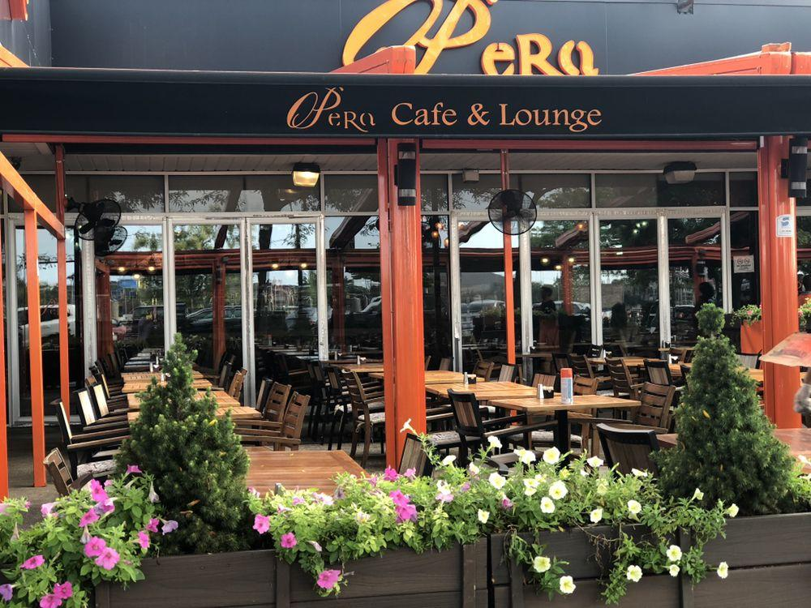
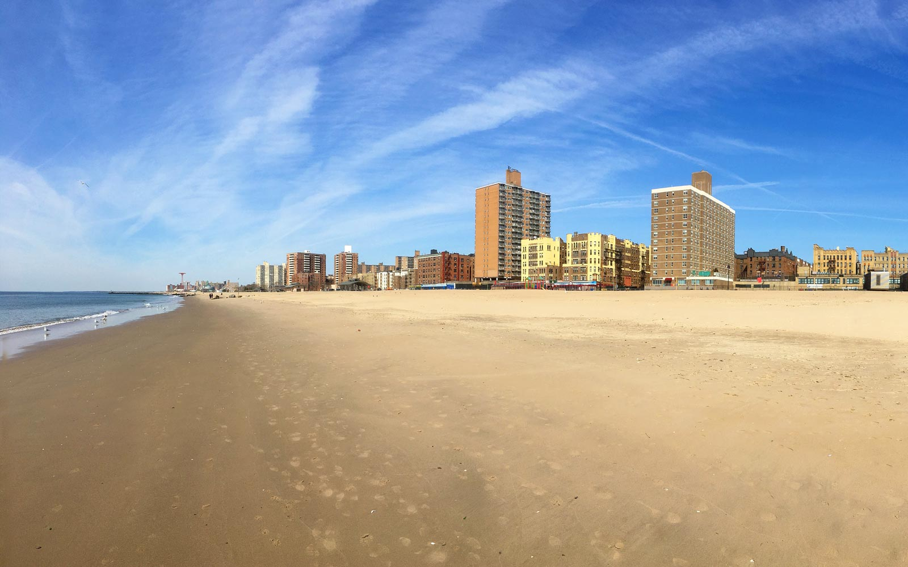

OPera is a Mediterranean Turkish restaurant in Sheepshead Bay, and my favorite item is the stuffed potato.
I love going to Brighton Beach on the weekdays in the summer, because there aren't a lot of people and the water is great.
Yogurt City is a short walk away from OPera, and I have been going there since I was little. Their frozen yogurt never dissapoints.

Although I wouldn't recommend swimming here because the waves are strong, it is very pretty. Especially when the sun is setting. There is also a huge parking lot and it's where I learned to drive during the fall/winter seasons.